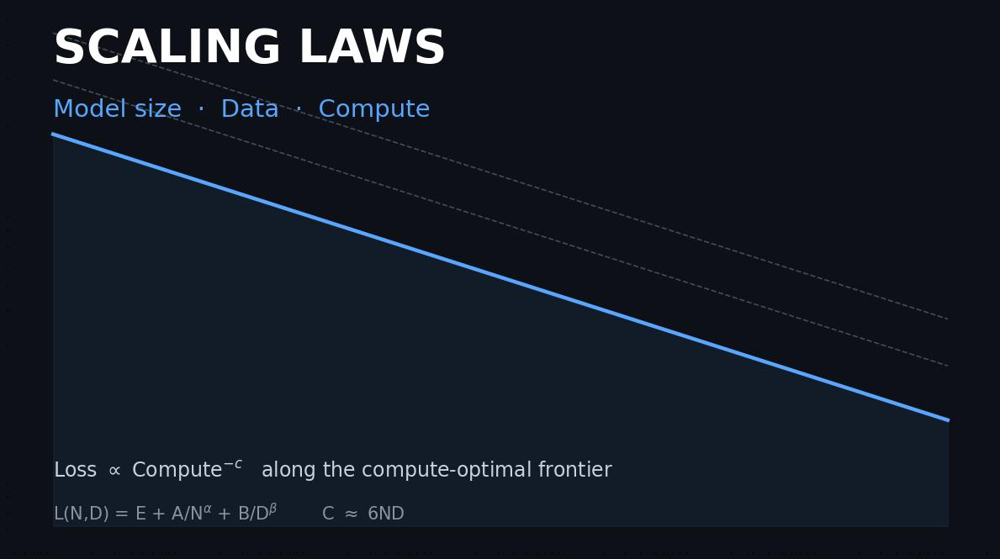
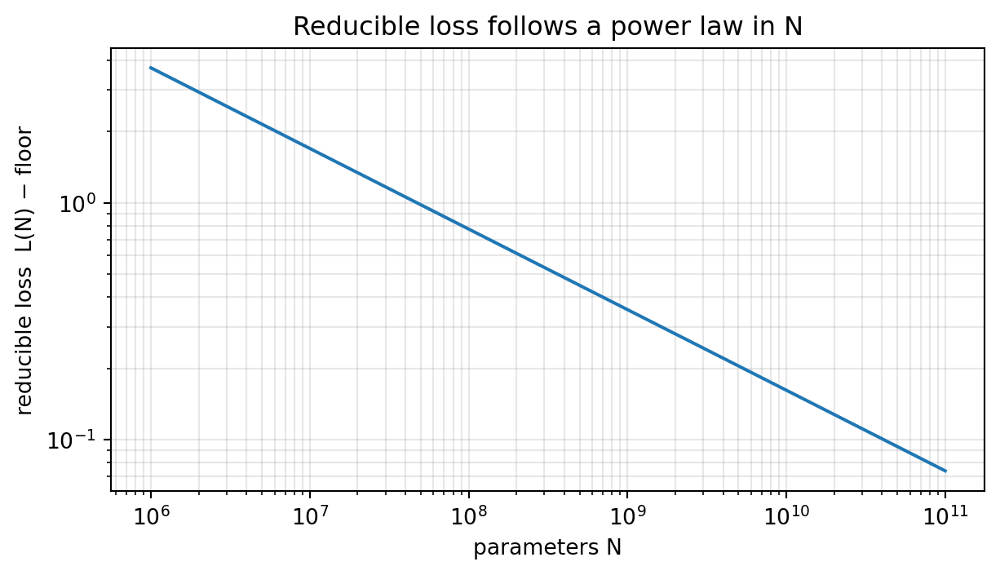

언어 모델의 손실이 왜 파라미터·데이터·컴퓨트에 대해 깔끔한 거듭제곱 법칙으로 감소하는지, 그리고 그 규칙성이 고정된 학습 예산을 어떻게 나누어 써야 하는지에 대해 무엇을 말해 주는지 살펴봅니다. Chinchilla 적합에서 얻은 파라메트릭 손실 곡면을 NumPy로 재구성하고, 컴퓨트 최적 배분을 유도하며, 발표된 스케일링 지수를 복원하고, 데이터에 비해 지나치게 큰 모델을 만들 때 치르는 손실을 측정합니다.
저자
Prof. Shin
공개
2026-08-09

[개념 시각화] 컴퓨트 최적 프런티어 위에서 감소 가능한 손실은 컴퓨트 예산의 거듭제곱으로 줄어듭니다. 컴퓨트 최적이 아닌 고정 배분(점선)은 항상 그 선보다 위에 놓입니다. 세 가지 지렛대, 즉 모델 크기 N, 데이터 D, 컴퓨트 C ≈ 6ND는 손실 곡면 L(N,D)로 서로 묶여 있습니다.
언어 모델은 얼마나 커야 할까요? 딥러닝 역사의 대부분 동안 이 질문에 대한 답은 정량적이라기보다 관습적이었습니다. 큰 모델이 더 좋으니 하드웨어와 인내심이 허락하는 한 모델을 크게 만들고 손실이 더 이상 줄지 않을 때까지 학습시키는 식이었습니다. 스케일링 법칙(scaling laws)은 그 직관을 측정된 관계로 대체했습니다. 여러 자릿수에 걸쳐, 자기회귀 트랜스포머의 교차 엔트로피 손실은 파라미터 수, 학습 토큰 수, 그리고 투입한 총 컴퓨트에 대해 매끄러운 거듭제곱 법칙으로 감소합니다[Kaplan et al., 2020]. 이 관계가 거듭제곱 법칙, 즉 로그-로그 축에서 직선이라는 점이 중요합니다. 직선은 외삽이 가능하고, 외삽이야말로 관찰을 계획 도구로 바꿔 줍니다. 아직 학습하지 않은 모델의 손실을 예측할 수 있고, 더 유용하게는 고정된 예산을 더 큰 모델과 더 많은 데이터 사이에서 어떻게 나눌지 결정할 수 있습니다. 이 글에서는 파라메트릭 손실 곡면에서 그 논리를 재구성하고, 컴퓨트 최적 분할을 유도하며, 분할을 잘못했을 때 치르는 대가가 얼마인지 보입니다.
경험적 규칙성: 손실은 거듭제곱 법칙으로 감소한다
핵심 발견은, 나머지 두 양을 병목이 되지 않게 유지한 채 세 양 중 하나를 키우면 테스트 손실 \(L\)이 예측 가능하게 감소한다는 것입니다. 세 양이란 파라미터 수 \(N\), 학습 토큰 수 \(D\), 컴퓨트 \(C\)입니다. 각 관계는 모두 같은 형태를 갖습니다.
\[L(N) = E + \frac{A}{N^{\alpha}},\]
여기서 \(E\)는 어떤 모델도 넘어설 수 없는, 데이터 자체의 엔트로피에 해당하는 축소 불가능한 바닥값이고, 두 번째 항은 지수 \(\alpha\)로 \(N\)의 거듭제곱에 따라 줄어드는 감소 가능한(reducible) 손실입니다. 이 지수는 1보다 한참 작은데, 이것이 이야기의 냉정한 부분입니다. 바닥값 위 손실을 절반으로 줄이려면 \(N\)을 \(2^{1/\alpha}\)배 늘려야 하므로 수익은 가파르게 체감합니다. 거듭제곱 형태의 가치는 스케일링이 값싸다는 데 있는 것이 아니라 예측 가능하다는 데 있습니다.
형태를 구체적으로 보기 위해 Chinchilla 연구에서 보고된 파라메트릭 적합을 사용합니다. 이 적합은 손실을 \(N\)과 \(D\)에 대해 \(L(N,D) = E + A/N^{\alpha} + B/D^{\beta}\)로 함께 모델링합니다[Hoffmann et al., 2022]. \(D\)를 사실상 무한으로 두면 \(N\) 항만 분리됩니다. 로그-로그 축에서 감소 가능한 손실은 기울기가 \(-\alpha\)인 직선이어야 하며, 그 기울기를 다시 적합해 복원하는 것은 코드와 수식이 일치하는지 확인하는 점검입니다.
import numpy as npimport matplotlib.pyplot as plt# Chinchilla parametric loss (Hoffmann et al., 2022, "Approach 3"):# L(N, D) = E + A / N**alpha + B / D**betaE, A, alpha =1.69, 406.4, 0.34B, beta =410.7, 0.28def loss(N, D):return E + A / N**alpha + B / D**beta# Hold data non-limiting so only the N term varies.N_grid = np.logspace(6, 11, 100) # 1e6 .. 1e11 parametersD_huge =1e15floor = E + B / D_huge**beta # irreducible + data-limited floorreducible = loss(N_grid, D_huge) - floor # isolates the A / N**alpha termslope, _ = np.polyfit(np.log10(N_grid), np.log10(reducible), 1)print(f"fitted log-log slope = {slope:.4f} (expected -alpha = {-alpha})")print(f"L at N=1e8 : {loss(1e8, D_huge):.4f}")print(f"L at N=1e10: {loss(1e10, D_huge):.4f} (100x params buys ~{loss(1e8,D_huge)-loss(1e10,D_huge):.2f} nats)")fig, ax = plt.subplots(figsize=(6.5, 3.8))ax.loglog(N_grid, reducible, color="C0")ax.set_xlabel("parameters N"); ax.set_ylabel("reducible loss L(N) − floor")ax.set_title("Reducible loss follows a power law in N")ax.grid(alpha=0.3, which="both")fig.tight_layout(); plt.show()
fitted log-log slope = -0.3400 (expected -alpha = -0.34)
L at N=1e8 : 2.4903
L at N=1e10: 1.8777 (100x params buys ~0.61 nats)

그림 1: 파라미터 수에 대한 감소 가능한 손실 L(N) − floor을 로그-로그 축에 그린 것. 거듭제곱 법칙은 직선으로 나타나며, 적합한 기울기가 지수 −α를 복원합니다.
적합한 기울기는 \(-0.34\)로, 우리가 넣은 \(\alpha\)와 정확히 일치합니다. 이는 로그-로그 직선이 그리는 범위의 인위적 산물이 아니라 진짜 거듭제곱 법칙임을 확인해 줍니다. 출력된 손실값은 수익 체감을 손에 잡히게 보여 줍니다. 파라미터 수를 \(10^8\)에서 \(10^{10}\)으로 백 배 늘려도 손실은 0.6나트 남짓밖에 줄지 않습니다. 스케일링은 작동하지만, 모델 크기를 한 자릿수 더 키울 때마다 얻는 이득은 직전보다 작아집니다.
세 변수의 손실 곡면
\(N\)만 따로 다루면 오해를 부릅니다. 데이터가 너무 적은 상태에서 학습한 큰 모델은 자기 크기가 시사하는 바닥값에 도달하기 훨씬 전에 개선이 멈추기 때문입니다. 이때 손실은 \(B/D^{\beta}\) 항에 붙들려 있습니다. 정직한 대상은 2차원 곡면 \(L(N,D)\)이며, 세 번째 변수인 컴퓨트는 앞의 두 변수와 독립이 아닙니다. 대략적으로, 밀집(dense) 트랜스포머 학습은 파라미터 하나당 토큰 하나당 약 6번의 부동소수점 연산이 드므로
\[C \approx 6\,N\,D\]
가 됩니다. 이 결합이 문제를 흥미롭게 만듭니다. \(N\), \(D\), \(C\)를 자유롭게 고르는 것이 아니라, 컴퓨트 예산 \(C\)를 정하고 나면 그것을 모델 크기와 데이터로 나누는 임의의 분할이 손실 곡면 위에 \(D = C/(6N)\)이라는 직선을 그립니다. 다음 그림은 그런 등(等)컴퓨트 직선 세 개를 곡면 위에 겹쳐 그립니다.
그림 2: 손실 곡면 L(N,D). 흰 점선은 등컴퓨트 등고선 D = C/(6N)입니다. 고정된 예산에서는 이 선을 따라 이동하며 모델 크기와 데이터를 맞바꿀 수 있습니다.
loss at N=1e9, D=2e10 : 2.5800
compute there : 1.20e+20 FLOPs
임의의 점선을 따라 그림을 읽는 것이 곧 계획 문제 전체의 축소판입니다. 오른쪽 아래로 가면 데이터가 부족한 큰 모델이고, 왼쪽 위로 가면 흡수하지 못할 만큼 많은 토큰 속에 놓인 작은 모델입니다. 그 사이 어딘가에서 직선은 가장 낮은 손실 등고선에 접합니다. 그 접점이 컴퓨트 최적 배분이며, 정확히 찾아 둘 가치가 있습니다.
컴퓨트 최적 배분: Chinchilla의 논증
고정된 예산 \(C\)에 대해 \(D = C/(6N)\)을 손실에 대입하고 \(N\)에 대해 최소화합니다. 도함수를 0으로 놓으면, 최적 모델 크기가 예산의 거듭제곱으로 커지는 닫힌 형태가 나옵니다.
\(C \approx 6ND\)이므로 두 지수의 합은 반드시 1이 됩니다. Chinchilla 지수 \(\alpha=0.34\), \(\beta=0.28\)을 넣으면 \(N\)은 약 \(0.45\), \(D\)는 약 \(0.55\)가 됩니다. 실무적 메시지는 모델 크기와 데이터를 거의 같은 속도로 늘려야 한다는 것입니다. 컴퓨트가 열 배로 늘면 모델을 약 세 배 키우는 동시에 약 세 배 많은 데이터로 학습해야지, 늘어난 자원을 전부 파라미터에 쏟아부으면 안 됩니다. 이것이 Chinchilla 연구가 이전 처방을 바로잡은 지점입니다. 이전 처방은 새 컴퓨트의 대부분을 모델 크기에 쓰라고 권했습니다[Kaplan et al., 2020; Hoffmann et al., 2022]. 아래 코드는 여러 예산에 대해 최적점을 수치적으로 찾고 지수를 다시 적합해 복원합니다.
def optimal_alloc(C, n_scan=4000): N_scan = np.logspace(6, 12, n_scan) D_scan = C / (6* N_scan) L_scan = loss(N_scan, D_scan) i = np.argmin(L_scan)return N_scan[i], D_scan[i], L_scan[i]Cs = np.logspace(18, 25, 40)Nopt, Dopt, Lopt = np.array([optimal_alloc(C) for C in Cs]).TaN, _ = np.polyfit(np.log10(Cs), np.log10(Nopt), 1)aD, _ = np.polyfit(np.log10(Cs), np.log10(Dopt), 1)a_theory = beta / (alpha + beta)b_theory = alpha / (alpha + beta)print(f"N* ~ C^{aN:.3f} (closed form {a_theory:.3f})")print(f"D* ~ C^{aD:.3f} (closed form {b_theory:.3f})")fig, axes = plt.subplots(1, 2, figsize=(9.5, 3.8))axes[0].loglog(Cs, Nopt, "o-", ms=3, label=f"N* ∝ C^{aN:.2f}")axes[0].loglog(Cs, Dopt, "s-", ms=3, color="C1", label=f"D* ∝ C^{aD:.2f}")axes[0].set_xlabel("compute C (FLOPs)"); axes[0].set_ylabel("optimal N*, D*")axes[0].set_title("Compute-optimal size and data")axes[0].legend(fontsize=8); axes[0].grid(alpha=0.3, which="both")axes[1].loglog(Cs, Lopt - E, "o-", ms=3, color="C2")axes[1].set_xlabel("compute C (FLOPs)"); axes[1].set_ylabel("reducible loss on frontier")axes[1].set_title("Loss along the compute-optimal frontier")axes[1].grid(alpha=0.3, which="both")fig.tight_layout(); plt.show()
N* ~ C^0.451 (closed form 0.452)
D* ~ C^0.549 (closed form 0.548)
그림 3: 왼쪽: 컴퓨트 최적 N와 D는 모두 예산의 제곱근에 가까운 거듭제곱 법칙으로 커집니다. 오른쪽: 최적 프런티어 위의 감소 가능한 손실은 컴퓨트가 늘수록 매끄럽게 감소합니다.
적합된 지수는 \(0.45\)와 \(0.55\) 부근으로, 원 논문의 적합에서 보고된 \(0.46\)과 \(0.54\)를 재현합니다. 논문이 해석적으로 푼 바로 그 도함수가 예산에 대한 거친 격자 탐색만으로도 그대로 나온다는 점이 안심되는 부분입니다. 오른쪽 패널은 프런티어 위에 머무를 때의 보상을 보여 줍니다. 바닥값 위 손실이 컴퓨트에 대한 또 하나의 거듭제곱 법칙으로 내려가므로, 항상 최적으로 배분한다면 컴퓨트를 더 쓸 때 예측 가능한, 다만 점점 둔화되는 수익을 얻습니다.
여기서 한 가지 단서는 결론에 묻어 두기보다 짚고 넘어가는 편이 낫습니다. 지수는 견고하지만, 이 파라메트릭 곡면이 함의하는 절대적인 파라미터당 토큰 비율은 Chinchilla 연구의 다른 추정 방법에서 널리 인용되는 “파라미터당 약 20토큰” 경험칙보다 높게 나옵니다. 후속 재현 연구는 발표된 파라메트릭 계수가 같은 논문의 iso-FLOP 분석과 조화시키기 어렵고 신뢰구간이 비현실적으로 좁게 보고되었다고 지적했습니다. 따라서 정확한 비율은 적합에 의존하는 값으로 다루고, \(N\)과 \(D\)가 거의 같은 속도로 커진다는 사실을 지속적인 결론으로 받아들이는 편이 타당합니다[Besiroglu et al., 2024]. 앞으로 가져갈 교훈은 어떤 마법의 상수가 아니라 최적점의 형태입니다.
잘못된 배분의 대가
최적점을 아는 것은 그것에서 벗어날 때 비용이 클 때에만 의미가 있으므로, 마지막 실험은 그 벌점을 정량화합니다. 예산을 고정하고 최적 분할을 구한 다음, 일부러 잘못 배분합니다. 파라미터를 여덟 배 늘리고(그래서 데이터는 8분의 1로), 그리고 그 거울상인 실수로 데이터를 여덟 배 늘리는 경우입니다. 컴퓨트를 일정하게 유지하므로 두 이동 모두 같은 등컴퓨트 직선을 따라 미끄러지며, 추가 손실은 접점에서 벗어난 순수한 대가입니다.
C0 =1e23Nc, Dc, Lc = optimal_alloc(C0)factor =8.0N_heavy, D_heavy = Nc * factor, Dc / factor # params-heavy: big model, little dataN_data, D_data = Nc / factor, Dc * factor # data-heavy: small model, lots of dataL_heavy = loss(N_heavy, D_heavy)L_data = loss(N_data, D_data)print(f"budget C = {C0:.0e} FLOPs")print(f" optimal N={Nc:.2e} D={Dc:.2e} L={Lc:.4f}")print(f" params-heavy N={N_heavy:.2e} D={D_heavy:.2e} L={L_heavy:.4f} (+{L_heavy-Lc:.4f})")print(f" data-heavy N={N_data:.2e} D={D_data:.2e} L={L_data:.4f} (+{L_data-Lc:.4f})")# The params-heavy model's loss is reachable by an OPTIMAL model on a smaller budget.Cext = np.logspace(21, 23, 400)Lext = np.array([optimal_alloc(C)[2] for C in Cext])C_needed = Cext[np.argmin(np.abs(Lext - L_heavy))]print(f" that loss is optimal at C={C_needed:.2e}"f" -> the misallocation wastes {C0/C_needed:.1f}x compute")ratios = np.logspace(-1.5, 1.5, 60)Lr = [loss(Nc * r, Dc / r) for r in ratios]fig, ax = plt.subplots(figsize=(6.5, 3.8))ax.semilogx(ratios, np.array(Lr) - E, color="C3")ax.axvline(1.0, color="k", ls=":", lw=1)ax.scatter([1.0], [Lc - E], color="C2", zorder=5, label="compute-optimal")ax.set_xlabel("model-size multiplier at fixed compute (N×r, D÷r)")ax.set_ylabel("reducible loss")ax.set_title(f"Cost of misallocating a fixed budget (C={C0:.0e})")ax.legend(fontsize=8); ax.grid(alpha=0.3, which="both")fig.tight_layout(); plt.show()
budget C = 1e+23 FLOPs
optimal N=1.46e+10 D=1.14e+12 L=2.0050
params-heavy N=1.17e+11 D=1.42e+11 L=2.0695 (+0.0645)
data-heavy N=1.83e+09 D=9.12e+12 L=2.0749 (+0.0699)
that loss is optimal at C=2.98e+22 -> the misallocation wastes 3.4x compute
그림 4: 고정된 컴퓨트 예산을 모델 크기와 데이터 사이에서 재배분할 때의 감소 가능한 손실. 배수 1에서의 최솟값이 컴퓨트 최적점이며, 모델을 너무 크게 하거나 너무 작게 해도 손실은 올라갑니다.
이 곡선은 얕지만 분명한 그릇 모양입니다. 모델을 여덟 배 크게 만들면 손실이 약 0.06나트 올라가고, 대칭인 데이터 과다 실수도 거의 같은 비용을 치릅니다. 이는 최적점이 모서리가 아니라 진짜 내부 최솟값임을 확인해 줍니다. 더 인상적인 수치는 컴퓨트 관점의 해석입니다. 최적으로 배분한 모델은 파라미터 과다 모델의 손실에 예산의 약 3분의 1만으로 도달하므로, 지나치게 큰 모델은 컴퓨트의 대부분을 버린 셈입니다. 이것이 바로 한 세대의 “너무 크고 덜 학습된” 모델들을 다시 보게 만든 논증입니다. 작은 오차의 벌점은 가벼워서 그릇이 얕지만, 배분이 크게 어긋나면 그 벌점은 낭비된 GPU-월(月)로 누적됩니다.
법칙이 약속하는 것과 약속하지 않는 것
스케일링 법칙은 특정한 밀집 트랜스포머 계열을 특정한 학습 레시피로 훈련해 적합한 경험적 규칙성이며, 그 조건이 끝나는 곳에서 법칙의 사정거리도 끝납니다. 적합된 계수 \(E\), \(A\), \(B\), \(\alpha\), \(\beta\)는 아키텍처, 토크나이저, 데이터 분포, 옵티마이저에 의존합니다. 데이터 품질을 바꾸거나 근본적으로 다른 구성 요소를 더하면 곡면이 이동합니다. 또한 이 곡선들은 다운스트림 능력에 대해서는 아무 말도 하지 않습니다. 다음 토큰 손실을 예측할 뿐이며, 손실에서 시험 통과나 올바른 코드 작성 여부로 이어지는 대응은 선형이지도, 매끄럽다는 보장이 있지도 않습니다. 적합 범위를 벗어난 외삽은 진짜 믿음의 도약입니다. 거듭제곱 법칙은 측정된 곳에서만 성립한다고 알려져 있기 때문입니다. 끝으로, 컴퓨트 최적 분할은 학습 예산에 대해 학습 손실을 최소화합니다. 모델이 수백만 사용자에게 서빙될 예정이라면 추론 비용이 계산을 바꾸며, Chinchilla 최적점이 권하는 것보다 훨씬 많은 데이터로 더 작은 모델을 학습해 추가 학습을 값싼 배포와 맞바꾸는 편이 정당화될 수 있습니다[Sardana et al., 2024]. 법칙은 계획 도구이지 자연 법칙이 아닙니다.
결론
스케일링 법칙이 중요한 이유는 예산 배분 문제를 산수로 바꿔 주기 때문입니다. 손실 곡면 \(L(N,D) = E + A/N^{\alpha} + B/D^{\beta}\)를 컴퓨트 항등식 \(C \approx 6ND\)와 결합하면, 모델 크기와 데이터가 거의 같은 속도로 커지는 컴퓨트 최적 배분이 나옵니다. 곡면을 직접 최소화해 복원한 \(0.45\)와 \(0.55\) 부근의 지수가 그것입니다. 실무적 이득은 긍정적인 만큼 부정적이기도 합니다. 데이터가 더는 감당하지 못하는 모델을 계속 키우지 말라고 알려 주며, 잘못된 배분 실험은 이를 무시하는 대가를 값으로 매겨, 여덟 배 지나치게 큰 모델이 컴퓨트의 대부분을 낭비함을 보였습니다. 법칙이 주지 않는 것은 낮은 손실이 높은 능력을 뜻한다는 보장, 그리고 적합된 지수가 데이터·아키텍처·배포 환경의 변화를 견딘다는 보장입니다. 측정된 영역의 지도로 쓰면 이 법칙들은 대규모 모델 학습이 가진 가장 신뢰할 만한 계획 도구이지만, 그 너머 영토에 대한 약속으로 쓰면 다음 적합을 기다리는 하나의 가설일 뿐입니다.
참고문헌
Kaplan, J., McCandlish, S., Henighan, T., Brown, T. B., Chess, B., Child, R., Gray, S., Radford, A., Wu, J., & Amodei, D. (2020). Scaling Laws for Neural Language Models. arXiv preprint arXiv:2001.08361.
Hoffmann, J., Borgeaud, S., Mensch, A., Buchatskaya, E., Cai, T., Rutherford, E., de Las Casas, D., Hendricks, L. A., Welbl, J., Clark, A., Hennigan, T., Noland, E., Millican, K., van den Driessche, G., Damoc, B., Guy, A., Osindero, S., Simonyan, K., Elsen, E., Rae, J. W., Vinyals, O., & Sifre, L. (2022). Training Compute-Optimal Large Language Models. Advances in Neural Information Processing Systems (NeurIPS). arXiv:2203.15556.
Besiroglu, T., Erdil, E., Barnett, M., & You, J. (2024). Chinchilla Scaling: A Replication Attempt. arXiv preprint arXiv:2404.10102.
Sardana, N., Portes, J., Doubov, S., & Frankle, J. (2024). Beyond Chinchilla-Optimal: Accounting for Inference in Language Model Scaling Laws. Proceedings of the 41st International Conference on Machine Learning (ICML). arXiv:2401.00448.